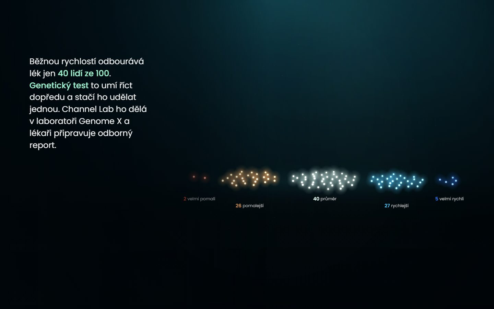

Zdroj a vysvětlivky
Zjednodušená ilustrace. Podíly skupin podle mezinárodních doporučení CPIC.

Sto lidí, jedna dávka. Stejný lék funguje každému jinak. Jeden člověk začne brát antidepresivum: každá dávka zvedne hladinu léku v krvi, tělo účinnou látku neustále odbourává. Po pár dnech se hladina ustálí; lék zabírá jen ve středním pásmu, pod ním nefunguje, nad ním přibývá vedlejších účinků (nevolnost, úzkost, nespavost). Když stejnou dávku dostane 100 lidí, ustálí se každý během dvou týdnů na jiném množství. Je to dané geneticky, podle toho, jak rychle tělo lék odbourává. Podle mezinárodních doporučení CPIC pro gen CYP2C19 jsou mezi Evropany 2 lidé ze 100 velmi pomalí, 26 pomalejších, 40 průměrných, 27 rychlejších a 5 velmi rychlých. Genetický test to umí říct dopředu a stačí ho udělat jednou. Channel Lab ho připravuje v laboratoři Genome X, výsledek vysvětlí aplikace Molecula a lékař dostane odborný report. Zjednodušená ilustrace.